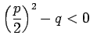

Inhalt Index DeskTop Bronstein

 Arithmetik Algebraische und transzendente Gleichungen Gleichungen n-ten Grades Gleichungen mit reellen Koeffizienten
Arithmetik Algebraische und transzendente Gleichungen Gleichungen n-ten Grades Gleichungen mit reellen Koeffizienten


Komplexe Wurzeln können auch als Lösungen von Polynomgleichungen mit reellen Koeffizienten auftreten, aber nur paarweise konjugiert komplex, d.h., wenn eine Wurzel ist, dann ist auch eine, und zwar mit der gleichen Vielfachheit. Mit und woraus  folgt, gilt
Wird in (1.166a) das Produkt eines jeden Paares derartiger Faktoren gemäß (1.168) ersetzt, dann ergibt sich eine Zerlegung des Polynoms mit reellen Koeffizienten in reelle Faktoren gemäß
Dabei sind die l reellen Wurzeln des Polynoms  . Es hat außerdem r Paare von konjugiert komplexen Wurzeln, die man als Nullstellen der quadratischen Faktoren
. Es hat außerdem r Paare von konjugiert komplexen Wurzeln, die man als Nullstellen der quadratischen Faktoren  erhält. Die Zahlen und sind reell, und es gilt
erhält. Die Zahlen und sind reell, und es gilt  .
.